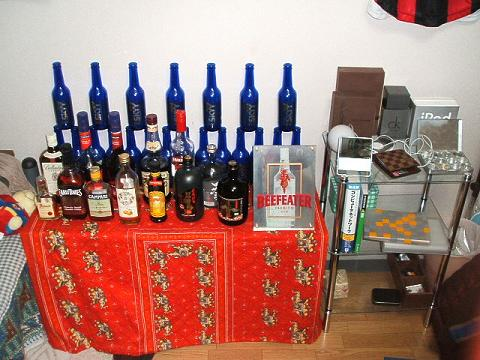

日々、想ふ
〜過去感じたことがつれづれと〜
（できるだけ最大化してお読みください）
日々、想ふ
ごん兵衛で飯食いました。１１/１５
眠いです、タケユキです。
さんまが泊まりに来てたんで昼まで寝て、
午後から授業で夜晩飯。
まぁいつもと違うのは晩飯を外に食べに行ったことくらいか。
今日の日記：睡魔に負けて３分更新。
久しぶり。１１/１４
さて、今日の実験は順調に進み時間内に終わったんで
夜さんまがうちきて晩飯食ってました、
というか今日は泊まりで今もうちにいます、タケユキです。
駅で待ち合わせして時間あったんでいつもの空港の公園に行ったんだけど
なぜか封鎖されてて警官らしいおっちゃんがたくさんいた。
なんかブッシュ大統領が来てるせいで入ったらいかんらしい。
誰かがこの公園から狙撃するかもって話ですかね。
今週は金曜に飲み会が控えてるくらいで何もないので
のんびり過ごそう週間にします。
今日の晩飯：肉、生ハム、肉。
その場じゃないと分からないこの面白さ。１１/１３
さて、今日もバイトだったわけですが。
今日は午前からバイトがスタート。
一本目が結婚式の披露宴。最後の新婦の挨拶で
なんと新郎新婦が１８歳。「四月に家族がもう一人増えます」
俺より年下じゃねえか、タケユキです。やっぱりか、みんなも気をつけろ。
そんな感じで夜までバイトの一日だったんだけど
午後６時ごろ、事件は起きた。
夜からの宴会が始まる直前に店長にちょっと大きめの声で
名前を呼ばれたんだけど、そしたら俺が返事する前に
「ハイッ！」
お客さんが返事した。
驚く俺と店長、一人恥ずかしそうなお客さん。
「あ・・僕も名前、タケユキなんです・・」
今日のバイト：いや〜おもしろかった。
そういえば昨日はポッキーの日だったんですよ。１１/１２
朝からバイクに乗ってました、
しかし冷えますね。寒かったです、タケユキです。
今日はバイト行って、宴会始まる前から
「高津(元ヤクルト)だ！高津に似てる！」と言われ、
２時間ほとんどからまれてました。
そんなに似てるかいなしかし。
明日は１０時半からバイトなのでさっさと寝ます。
今日のバイト：なんかみんなピリピリ。
パワポ天国。１１/１１
おいあつしバイト先でなにしゃべってくれとんねん、
俺のプライベートを勝手に言ったらダメじゃろーて。
明日のバイトで俺がからかわれたらあんたフォローしろよ、タケユキです。
さて昨日悪戦苦闘したパワーポイントのスライドのプレゼンが
今日あったわけだけど、
いつも担当の先生が出張のため代わりに院生が見るってことに。
もう肩の荷おりまくり。
先生の鋭い指摘に肩身の狭い時間を過ごす事になると思ってたら
代わりに見てくれるのは院生ですかそうですか。
てなわけで終始あはは〜って空気で発表。
毎週こんなだったらいいのに、
と思いながら発表やったら後で間違いはしっかり指摘されたので
やっぱり院生でもしっかりしてるんだと思った。
今日の一日：ポッキーの日なんですよね。
パワポ地獄。１１/１０
夜けっこう冷えますね、タケユキです。
さて、明日は時間割が変わって２限で終わりって話だけど
２限はプレゼンだったりします。俺が発表だったりします。
発表に使うスライドはもう作ってあるんだけど
作ったのが２週間も前で内容きれいさっぱり忘れてるんで
今から復習＆修正＆追加の作業。
発表終わると今週終わり、がんばりますか。
今日の写真：そういえば先週部屋整理した時にお酒をまとめて
バーカウンタ−みたいなのを作ってみた。

後ろにわさー並んでるのはスカイブルーの空き瓶です。
何で多いかは分かりません。１１/９
最近洗濯物が多いです、タケユキです。
そんな書き出しで始まる今日の日記なんだけど
これはしかし今の生活を考えるとありえないことなんですよ。
確かに寒くなって厚着になってきてるから
洗濯物が増える季節だってのは分かるんだけど
でも俺の普段着というか学校に行く格好の８０％はジャージ。
この数字を証明するかのごとく
昨日今日とジャージで学校行ってる自分がいるわけです。
もう学校での出会い捨ててんなぁ俺。
そんなわけで洗濯物が増えるわけはないのにと思いながら
今日も夜中に洗濯物を干していってたら、
タオル、Ｔシャツ、タオル、靴下、タオル、バスタオル、バスタオル・・
タオル多ッ。
今日の謎：いや結局分からないままなんですよ。
考え方ひとつ。１１/８
ふう、タケユキです。
火曜日の授業に毎回いろいろな先生が交代で授業、
しかも常にレポート提出がついてくるという
授業中は楽だけどちょっとめんどくさい科目があったりするんだけど
今回の授業のレポート課題は「なんでも自由」でした。
自分が興味ある内容を好きに書け、みたいな。
毎回先生が違うってことは毎回提出するレポートも受け取る先生は違うわけで、
それを聞いてから、
今回提出したレポートと同じやつを来週も提出できることに
気付いた俺は人生の勝ち組。
今日の部屋：３段ラックを買いました。
連休明けかと思いきや。１１/７
バイク用グローブがほしい、タケユキです。
今日は月曜日、たいていの場合土・日からの休み明けの週初めだけど
昨日までの学祭の片付け日ってことで学校は休み。
俺はほとんど学祭関係なかったけどラッキーってことで
何をしてたかというとちょっと買い物してたり
回転寿司行ったりしてみた。
しかし俺は好き嫌いがはげしくて
回転寿司行ってから、サーモン、焼きサーモン、あぶりサーモン食って、
鮭とろ食ってまたサーモン食べて、最後にデザート食ってた。
なんだこの偏食ぶり。
今日の日記：明日は規則正しい生活をしようと思う。
学祭〜三日目〜。１１/６
だから朝からバイトだから学祭行ってねえって言ってんだろが、タケユキです。
朝８時に起きて梅田行って御堂筋沿いを歩いてたら
今日は阪神タイガースの優勝パレードやるってんで交通規制してた。
てかそんなんで六車線全部を封鎖すんじゃねえよ。
今日雨だったから電車で梅田行ったからよかったものの
もしバイクで行ってたら俺バイト完璧遅刻やんけ。
というわけで働いて帰ってきて家で一人酒飲んでます。
ウイスキーをオレンジで割ったら飲みやすいことに気づいたから
今日はサラダ記念日。
今日の日記：なにかおかしい。
学祭〜二日目〜。１１/５
今日は学祭二日目です、タケユキです。
と見せかけてバイトがあったのでいけませんでした。
明日も１０時からバイトです、１０時からて。
おやすみなさい。
今日のうれしい出来事：給料入りました。
学祭〜初日〜。１１/４
今日から三日間うちの大学は学祭やってます、タケユキです。
てなわけでサークルのメンバーでサッカーの試合に出たわけですが
出場人数９人(サッカーなのに)、
最後にサッカーしたのおそらく半年以上前、
ましてやフォワードが俺(まあそれはいつものことなんだけど)、
だったりして結果は残念ながら０−１で初戦敗退。
でも何度がチャンスがあったのは事実で。
俺がうまくやれたら違ったんじゃねえのかなと思いながらも
１５分しかサッカーしてないのに
うわー超しんどーと強く思った俺がいる。
しかし体力ねえなぁ。
今日のバイト：給料もらうの忘れた。
マスツーリング。１１/３
初めてのマスツーリングでした、タケユキです。
というわけで
２００５秋ツーリング〜松原・不動窟・大台ケ原〜をアップしました。
久しぶりに長距離ツーリング、少し疲れたけど
確かに寒かったりもしたけど、バイクはいい、やっぱり。
今日の晩ご飯：てっとりばやくスパゲティ。
１１月最初の日の次の日。１１/２
今日は一人ヤケ酒、タケユキです。
Ｘ（エックス）デーかと思いきやではなくただの×(バツ)デーだったとかどうとか。
明日朝早いので寝ます。
今日の就寝時間：久しぶりに０時。
１１月最初の日。１１/１
明日から日曜まで連休だったりします、タケユキです。
今日は昼から学校行って学食で今年の冬を乗り越えるための
簡単な作戦会議を行う、編成部隊ほぼ決定。
それからレポート書いて授業出て小説読んで帰宅。
昨日家で飲んで冷蔵庫のお酒がなくなったんで買い出しへ。
別に今日は飲み会やるわけじゃないけどとりあえずストックが必要なんで。
缶のチューハイそこそこ買っておいしそうだった黒糖梅酒買って、
家で
SAW借りてきて見た。
超こええ。
しかも再生中に途中でパソコンが固まったり・・
ひえええええ！！！
今日の酒：残り少なかったウォッカとディタを飲み干し処分。